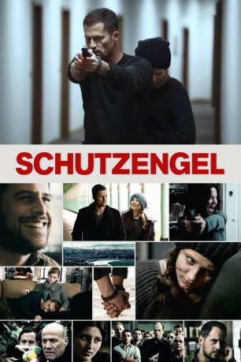
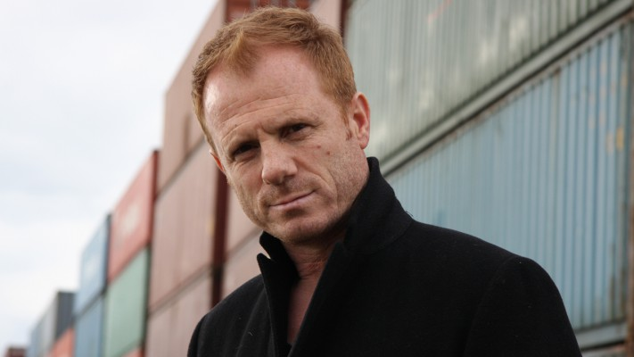

#9203 Schutzengel
 
 IMDB-Wertung: 5.8 / 10
IMDB-Wertung: 5.8 / 10  Metascore: 0
Metascore: 0 
Die junge Nina wird Zeugin eines furchtbaren Verbrechens. Als Vollwaisin ist sie schutzlos und der mächtige Geschäftsmann Thomas Backer plant bereits ihre Ermordung und hat eine Reihe von Killern auf sie angesetzt. Zum Glück bekommt jedoch der ehemalige KSK-Soldat Max den Auftrag, sie zu beschützen. Das Verhältnis der beiden ist allerdings problematisch, Max ist ein Einzelgänger, während Nina sich noch nie einem Erwachsenen anvertraut hat. Mit der Zeit finden die beiden aber zusammen. Gemeinsam gelingt es ihnen auch, einigen schwierigen Situationen zu entfliehen. Dabei können sie auch auf die Hilfe von Max' ehemaligem Kriegsgefährten Rudi und seiner Ex-Freundin Sara zählen. Sara schließt sich dem ungleichen Duo schließlich an und kann sich im Verlauf der Flucht durch ihre Position als Staatsanwältin nützlich machen. Doch der Gegner ist der Gruppe immer noch auf den Fersen.
Jahr: 2012
Dauer: 132 Minuten
FSK: 16
Land: Deutschland Studio: Warner Bros.Tonspuren:
Untertitel:
Auflösung: 1080p (1920x816) Größe: 9379 MB
Genre: Action, Thriller, Drama, Krimi
Regisseur:  Til Schweiger
Til Schweiger
Drehbuch: Stephen Butchard
Soundtrack: Martin Todsharow
Darsteller:
 Numan Acar als TV Reporter Türkei
Numan Acar als TV Reporter Türkei- Loyd Bateman als Shooter 12
 Moritz Bleibtreu als Rudi
Moritz Bleibtreu als Rudi Rainer Bock als Karl Falkner
Rainer Bock als Karl Falkner Jytte-Merle Böhrnsen als Leo's Frau
Jytte-Merle Böhrnsen als Leo's Frau Teresa Harder als Krankenschwester 1
Teresa Harder als Krankenschwester 1 Mickey Hardt als Falscher Polizist 2
Mickey Hardt als Falscher Polizist 2 Ralph Herforth als Streifenpolizist 1
Ralph Herforth als Streifenpolizist 1 Hannah Herzsprung als Helena
Hannah Herzsprung als Helena-  Kasem Hoxha als Shooter 5 / Watcher
 Aleksandar Jovanovic als Falscher Polizist 1
Aleksandar Jovanovic als Falscher Polizist 1 Herbert Knaup als Henri Brietner
Herbert Knaup als Henri Brietner Oliver Korittke als Rezeptionist
Oliver Korittke als Rezeptionist Heiner Lauterbach als Thomas Backer
Heiner Lauterbach als Thomas Backer- Manou Lubowski als Streifenpolizist 2
 Antoine Monot Jr. als Fahrer
Antoine Monot Jr. als Fahrer- Frank Plasberg als Talkmaster
 Trystan Pütter als Verteidiger
Trystan Pütter als Verteidiger- Jana Reinermann als Krankenschwester 2
- Anna-Katharina Samsel als Streifenpolizistin 2
 Katharina Schüttler als Polizistin Diner
Katharina Schüttler als Polizistin Diner Til Schweiger als Max Fischer
Til Schweiger als Max Fischer Kostja Ullmann als Kurt
Kostja Ullmann als Kurt Tim Wilde als Nicholas
Tim Wilde als Nicholas Fahri Yardim als Streifenpolizist 1
Fahri Yardim als Streifenpolizist 1- Volker Albers als TV Reporter RTL
- Gode Benedix als Krankenpfleger
- Nicolais Borger als Falkners Tochter 2
- Vanessa Bühler als Angestellte Supermarkt
- Nina Eichinger als TV Reporterin N-TV
- Matthias Fornoff als Nachrichtensprecher ZDF
- Wanja Götz als Shooter 10
- Marcel Graf als Shooter 13
- Matthias Günther als Shooter 6
- Carsten Hädler als TV Reporter N24
- René Hiepen als TV Reporter / Nachrichtensprecher N24
- Jan-Philipp Jarke als Shooter 8
- Werner Kalb als Polizist Diner
- Peter Limbourg als Nachrichtensprecher Sat1
- Jacob Matschenz als Toni Santer
- Dudana Mazmanishvili als Nachrichtensprecherin Russland
- Leslie Nachmann als Nachrichtensprecher Pro7
- Alexander Padrutt als Shooter 7
- Frederik Pleitgen als TV Reporter CNN
- Felicia Pochhammer als Nachrichtensprecher N24
- Stephanie Puls als TV Reporter N24
- Monita Rajpal als Nachrichtensprecherin CNN
- Ben Ruedinger als Bedienung
- Monique Schröder als Falkners Tochter 1
 Karoline Schuch als Sara Müller
Karoline Schuch als Sara Müller
Datei: X:\2012(N-Z)\Schutzengel (2012, FSK16, 1920x816).mkv seit 19.07.2018
Festplatte: HD 2012(N-Z)-2013(A-H)
 Es gibt insgesamt 138 Filme in der Gruppe '2012(N-Z)'
Es gibt insgesamt 138 Filme in der Gruppe '2012(N-Z)'